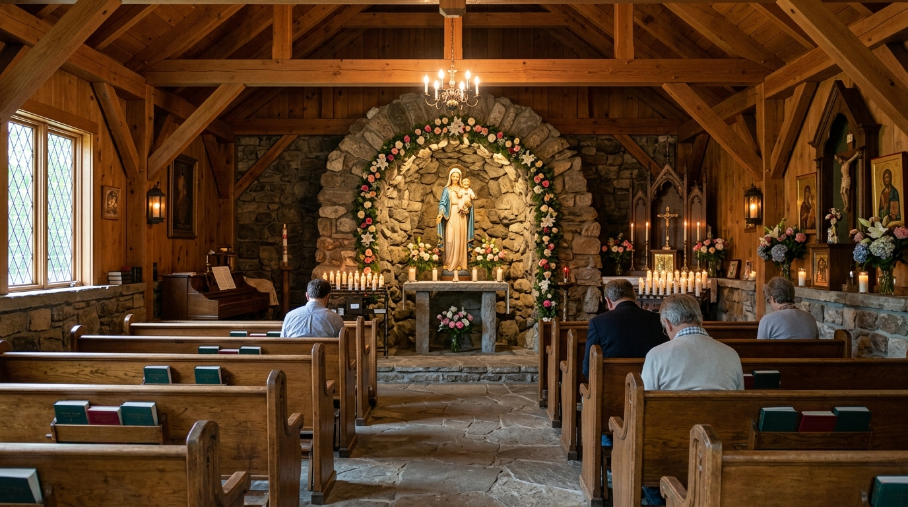
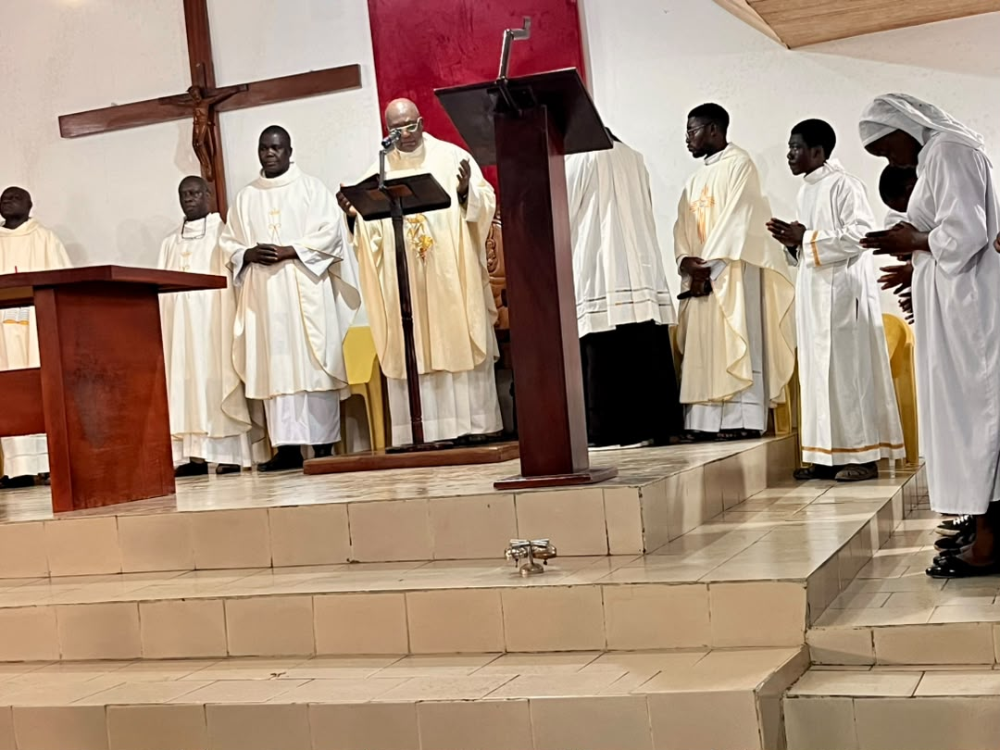
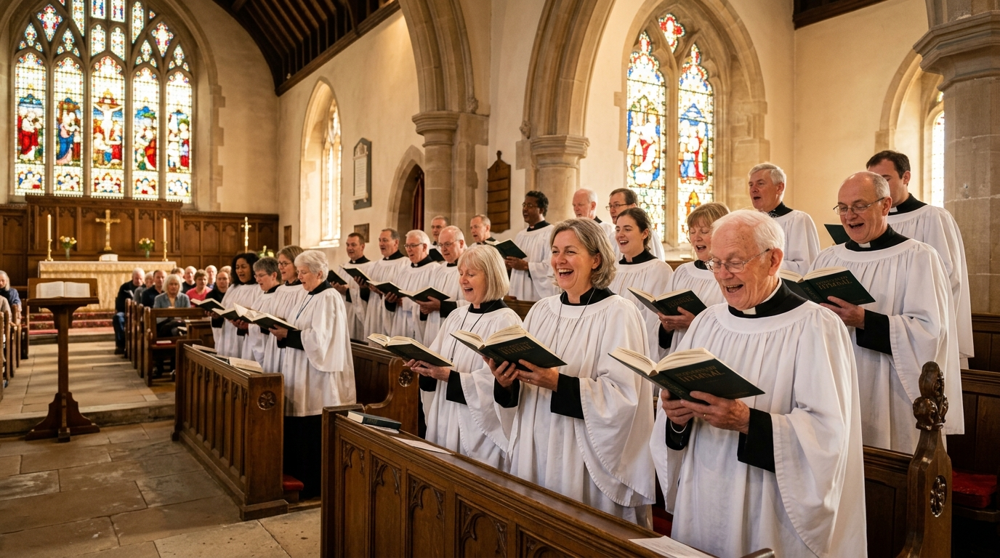

Chargement des actualités...

Vie paroissiale
Temps Pascal
Programme de la Semaine Sainte
Des Rameaux à la Résurrection : découvrez le déroulement complet de nos célébrations.
Lire la suite →
Projets
Travaux en cours
Nos projets de construction avancent
Construction de la Grotte Mariale et nouveau Presbytère.
Lire la suite →
Vie paroissiale
Événement spirituel
Cérémonie de réparation après la profanation
Retour sur la célébration présidée par le Vicaire Général.
Lire la suite →
Jeunes
Mensuel
Rencontre des jeunes (CPJ)
Partage, prière et activités fraternelles. Tous les jeunes sont les bienvenus.
Nous contacter →
Chorales
Toute l'année
Rejoindre nos chorales
Nos chorales accueillent les nouveaux choristes et instrumentistes.
Nous contacter →
Vie paroissiale
Chaque mercredi
Adoration Eucharistique
Chaque mercredi, venez passer un temps d'adoration auprès du Saint-Sacrement.
En savoir plus →